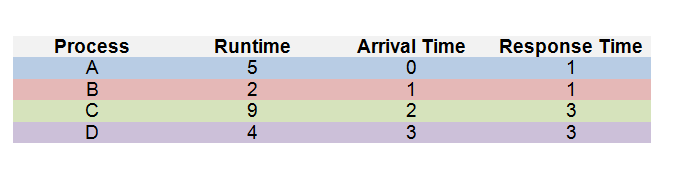
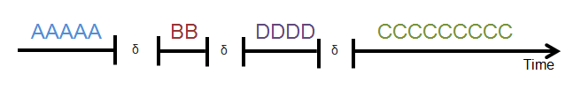
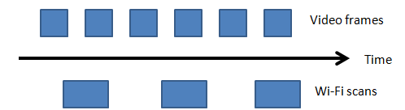

Scheduling policies are created based on how much each metric is valued in the scheduler. A policy is a tactic by the scheduler to determine the order in which processes run. While it would be ideal to improve all metrics, the waterbed effect causes one metric to worsen as another improves. Depending on the needs of the processes, different policies are used to determine how a scheduler should be designed.
A scheduler should address the problem of starvation, in which some processes may be constantly denied resources from the CPU. It is possible that a process may never finish after it is started.
Some common policies are as follows:
The First-Come-First-Serve (FCFS) Policy:
In an FCFS model, every process runs in the order that they are fed to the scheduler, regardless of their runtime or their response time. This policy uses only the arrival time as the determining metric.Example:

Having the CPU switch processes also takes an overhead time; this is denoted by δ.

What does each wait time look like?
Process A: First process, so wait time is 0
Process B: Total time from A + Context switching;
Total wait time is 4 + δ
Process C: Total time from B + Context switching;
Total wait time is 5 + 2δ
Process D: Total time from C + Context switching;
Total wait time is 13 + 3δ
Average wait time: 5.5 + 1.5δ
Average turnaround time: 10.5 + 1.5δ
Average response time: 7.5 + 1.5δ
Pros:
- Because each process finishes before a context switch occurs, the total overhead time is minimized given multiple processes. No extra context switches are needed other than the initial one for every process.
- In addition, because context switches are only done after the process is finished, starvation never occurs in a FCFS scheduler, assuming no pre-emption is done.
- Average wait times may be very long depending on the order of arrival and the total runtime of each process. For instance, if an extremely long process precedes a number of short processes, each of the short processes needs to wait for the long process to finish before running, increasing the average wait time.
- Similarly, average response and overhead time may not be optimal as well, if the long process is placed before a number of short ones.
The Shortest Job First (SJF) Policy:
A shortest job first scheduler schedules new items into the queue based on the total runtime of the process. If there are other existing processes waiting that have a longer runtime than the new one, then the new process will be scheduled before the longer, older ones, giving it more priority.Using the previous example:

Wait times:
Process A: First process;
Total wait = 0
Process B: Total Process A time + Context Switching
Total wait = 4 + δ
Process D: Total Process B time + Context Switching
Total wait = 4 + 2δ
Process C: Total process D time + Context Switching
Total wait = 9 + 3δ
Average wait time: 4.25 + 1.5δ
Average turnout time: 9.25 + 1.5δ
Average response time: 6.25 + 1.5δ
Pros:
- Faster average wait, turnout, and response times when compared to FCFS scheduling
- Possible fairness problem that can cause starvation; what if the scheduler receives a large amount of smaller processes when there is already a large process waiting? Due to the SJF scheduler, all of the smaller processes would first be processed, leaving the larger process hanging. It is possible that this larger process never finishes, hence resulting in a starvation issue.
The Round Robin Policy:
The Round Robin strategy employs the use of preemption, in which the scheduler temporarily interrupts one process and switches to another. It combines this with a FCFS model and constantly switches between processes as they are added to the scheduler. The scheduler switches the CPU to another process after every time interval, and includes any new incoming processes in the rotation after it finishes a cycle.Using the previous example again:

At the end, no context switching needs to be done since all other processes are finished.
Pros:
- No starvation occurs in this policy since the scheduler is constantly rotating between all processes, not leaving any single process unattended to.
- Low average wait times because all processes are reached at least once in the round trip before doing the same again. In this scenario, the average wait time for all processes is 1 + 2.5δ, much lower than the two previous policies.
- Because so much switching is done in the scheduler, a large amount of overhead from context switching is present. Each time the scheduler makes a switch, the overhead time needs to be considered in the total run time.
Priority Scheduling
There are different ways of gauging which item to schedule first. The convention by which a process is measured against another in order to determine order is its priority. A low-valued priority can mean that it is scheduled first or that it is scheduled last. For convention, we will say that a lower value priority means that it will be scheduled first. Priority does not necessarily have to consist of a single factor that determines whether a process is scheduled before another, such as run time. It can comprise of several different aspects. For instance, the Linux scheduler has the following formula to compute priority:
Priority = niceness + total CPU time + (- time since the last run)
Niceness is a utility property that is used to determine a priority level to assign to a process, though it is not the only factor. Its general default value is 0. A user can change a process’s niceness through the nice command to improve performance on a specific process. Because the scheduler relies on the total CPU time and the time since the last run, it is not entirely a best-effort scheduler, and a process with a lower niceness may not necessarily beat out a process with a higher one.
Hard Real-Time Policies
For systems in which process turnaround may mean life or death rather than just inconvenience (for instance, a nuclear power plant), a best-effort scheduler is not enough. Such systems often employ a hard real-time scheduler. The exact implementations vary and are unimportant; in general they have these characteristics:
- Process deadlines cannot be missed. Failure to complete a task within an alloted time represents total system failure. Thus, turnaround time is heavily favored over every other metric.
- Their performance must be predictable. To accomplish this, such schedulers typically:
- Disable caching, because caches can cause dramatic variation in runtime
- Use polling instead of interrupts, because asynchronicity is too unpredictable
- Extremely application-specific
Soft Real-Time Policies
As opposed to hard real-time, soft real-time systems can tolerate some missed deadlines, but at the expense of degraded user experience. An example usage is in smartphones. Here are some characteristics of soft real-time systems:
- They often need to run multiple concurrent, periodic jobs each with their own deadline.
- Jobs, or small aspects of them, can be cancelled without too much cost.
- They are more generalized than hard real-time systems
An example application would be watching a video on a smartphone. The phone must handle
periodic frame rendering and background wi-fi scanning as thus:

Ideally, every frame and scan are performed on time. Occasionally missing one of two blocks
may degrade experience, but is not destructive. Some policies might include:
- Earliest deadline first, where job deadlines is the sole dealbreaker
- Priority-based, giving weight to factors other than just deadlines
- Rate-monotonic scheduling, where small, frequently-run tasks are given higher priority to run